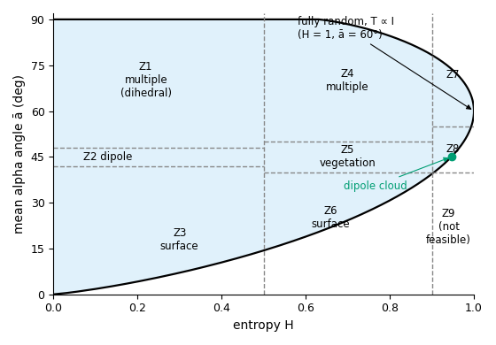

| SAR Concepts: Polarimetric Decompositions | |
A polarimetric decomposition splits the measured scattering matrix, or its averaged covariance or coherency matrix, into a few components with a physical meaning: surface, double-bounce and volume scattering, or a dominant mechanism and its randomness. The methods rest on different assumptions, so they give different numbers for the same pixel. Choose the one that matches your question and know where it breaks down.
The matrices, the Pauli basis and reflection symmetry are introduced on the Polarimetry Primer page. Below, T3 is the window-averaged coherency matrix, C3 the covariance matrix, and the span their trace.
| Family | Works on | Idea | SNAP options |
|---|---|---|---|
| Eigenvector-based | T3 (averaged) | Eigenvalues give the weight of each mechanism, eigenvectors its type; no physical model | H-A-Alpha, Cloude, Touzi, van Zyl |
| Model-based | C3 / T3 (averaged) | Fit a sum of model matrices (surface, dihedral, volume, helix) | Freeman-Durden, Generalized Freeman-Durden, Yamaguchi, MF3CF, MF4CF |
| Coherent | S per pixel, or a single target extracted from T3 | Write S as a sum of canonical scatterers | Pauli, Sinclair, Krogager, Cameron, Huynen, Yang |
Cloude and Pottier diagonalise the coherency matrix, T3 = Σ λi ui uiH with λ1 ≥ λ2 ≥ λ3 ≥ 0, and use the normalised eigenvalues pi = λi / (λ1 + λ2 + λ3):
H = − Σi pi log3 pi
A = (λ2 − λ3) / (λ2 + λ3)
α = Σi pi αi
Each eigenvector is written ui = [cos αi, sin αi cos βi ejδi, sin αi sin βi ejγi]T (up to a phase), so αi is the angle between ui and the odd-bounce Pauli axis.
All three are roll-invariant: rotating the target about the line of sight does not change them. Not every (H, α) pair is possible; Figure 1 shows the feasible region and the zones used for classification.

Figure 1. The H–α plane. Solid curves bound the feasible region (computed from diagonal coherency matrices). Dashed lines are the zone boundaries SNAP uses (H = 0.5, 0.9; α = 42°/48°, 40°/50° and 40°/55°); zone numbers follow SNAP's default numbering. A random cloud of thin dipoles sits at H ≈ 0.95, α = 45°.
Touzi describes each eigenvector with roll-invariant parameters (the symmetric scattering type
magnitude αs and phase Φαs, and the helicity τ) plus the
orientation angle ψ. The phase separates scatterers that have the same α but different dielectric or
geometric behaviour. Cloude shows the dominant eigenvector alone as a Pauli-type RGB. van
Zyl (in SNAP, the eigen-analysis of a reflection-symmetric C3) assigns the cross-polar
eigenvalue to volume and the two co-polar eigenvalues to surface and double bounce by the type of their
eigenvectors: one has HH and VV in phase (odd bounce), the other in anti-phase (even bounce). The sign of
Re<SHHSVV*> decides which is which. Where it is positive the larger
eigenvalue is surface; where double bounce dominates (negative, e.g. buildings parallel to the track) the
larger eigenvalue goes to VanZyl_dbl_r. SNAP versions before 15 always labelled the larger one
as surface.
Freeman and Durden model the covariance matrix as three mechanisms, assuming reflection symmetry:
C3 = fs Csurface + fd Cdouble + fv Cvolume
The volume term is a cloud of randomly oriented thin dipoles; it is the only term with cross-polar power, so fv is set from <|SHV|2> and its contribution is subtracted. The remainder is split into surface (Bragg) and double bounce using the sign of Re<SHH SVV*>. The three powers Ps, Pd and Pv add up to the span.
Yamaguchi et al. (2005) add a fourth, helix component, Pc = 2 |Im T23|, for areas without reflection symmetry such as cities, and choose between three volume models from the ratio 10 log10(<|SVV|2> / <|SHH|2>) with thresholds at ±2 dB. Yamaguchi et al. (2011) first rotate T3 about the line of sight to minimise T33, which reduces the cross-polar power that oriented buildings and slopes add.
The model-free MF3CF and MF4CF methods (Dey et al.) do not assume a volume model. They use the degree of polarisation of T3 and a scattering-type angle θFP, and always give non-negative, roll-invariant powers.
Coherent methods treat each pixel as one deterministic scatterer. Krogager writes S as a sphere, a diplane and a helix; Cameron extracts the largest symmetric component and its angle to S; Huynen and Yang extract one equivalent single target from T3. They suit point targets and man-made structures. On forests or fields the pixel is speckle, and the results are as noisy as the data.
| Question | Start with |
|---|---|
| Quick look at the dominant mechanisms | Pauli RGB |
| How much surface, double-bounce and volume power (flooded forest, urban, crops)? | Yamaguchi with orientation correction; Freeman-Durden; MF3CF if negative powers are a problem |
| Unsupervised land-cover classes, independent of target orientation | H-A-Alpha, then H-Alpha Wishart classification |
| Discriminating scatterers that share the same α | Touzi |
| Point targets, ships, man-made structures | Krogager, Cameron, Huynen |
| Only dual-pol data (Sentinel-1) | H-Alpha Dual Pol or Model-Based Dual Pol; see Dual-pol and Compact Polarimetry |
Polarimetric-Decomposition) offers Sinclair (the
default), Pauli, Freeman-Durden, Generalized Freeman-Durden, Yamaguchi, van Zyl, H-A-Alpha Quad Pol,
H-Alpha Dual Pol, Cloude, Touzi, Huynen, Yang, Krogager, Cameron, Model-free 3-component,
Model-free 4-component and Model-Based Dual Pol. All except the two dual-pol options need a quad-pol
SLC (8 i/q bands) or a C3, T3, C4 or T4 product.Freeman_dbl_r, Freeman_vol_g,
Freeman_surf_b (dB; Generalized Freeman-Durden writes the same names). Yamaguchi:
Yamaguchi_dbl_r, Yamaguchi_vol_g, Yamaguchi_surf_b,
Yamaguchi_hlx (dB). van Zyl: VanZyl_dbl_r, VanZyl_vol_g,
VanZyl_surf_b (linear). MF3CF: MF3CF_even_r, MF3CF_diffused_g,
MF3CF_odd_b (linear) and MF3CF_theta_FP. H-A-Alpha: tick at least one
output group; Entropy, Anisotropy and Alpha (degrees), plus
optional Alpha1..3, Lambda1..3, Beta, Delta,
Gamma, Lambda. Krogager: ks_b, kd_r,
kh_g (amplitudes).applyOrientationAngleCorrection
(default false) is available only in GPT and graph XML, not in the dialog. In SNAP Desktop, run
Polarimetric Orientation Angle Correction before the decomposition. SNAP's Yamaguchi option does not
rotate T3 by itself; with this correction it comes close to the 2011 rotated form.